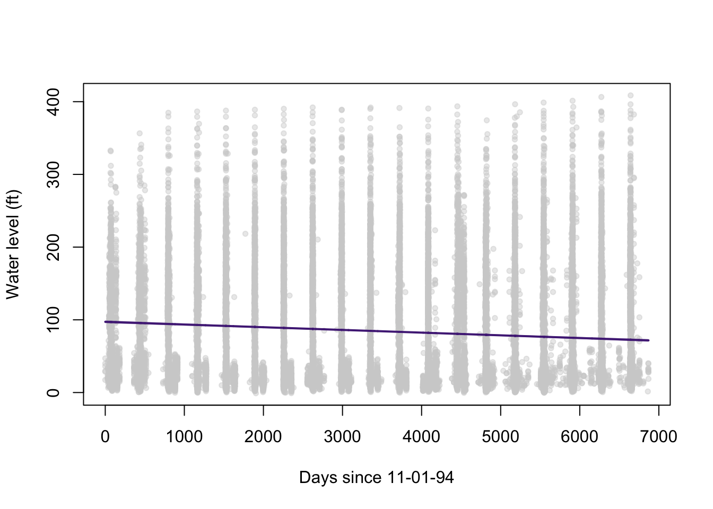
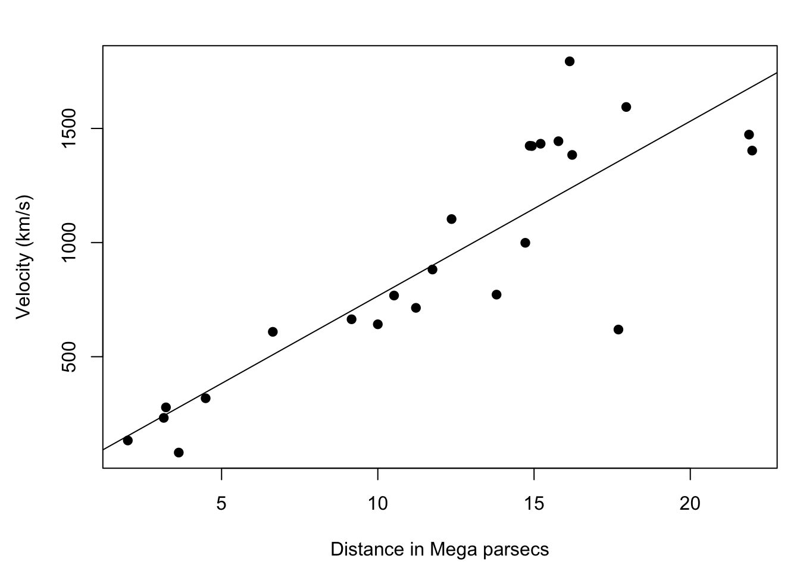

9 Day 9
9.1 Review
- Multiple linear regression
\[ \boldsymbol{y} = \beta_0 + \beta_1 \boldsymbol{x}_1 + \beta_2 \boldsymbol{x}_2 + ... + \beta_k \boldsymbol{x}_k + \boldsymbol{\epsilon} \]
\[ \boldsymbol{y} = \boldsymbol{X \beta} + \boldsymbol{\epsilon} \]
\[ \widehat{\mathbb{E}(\boldsymbol{y})} = \hat{\boldsymbol{\beta}} = (\boldsymbol{X}^\prime \boldsymbol{X})^{-1} \boldsymbol{X}^\prime \boldsymbol{y} \]
# framingham heart study (long term cohort study on heart health)
framingham = read.csv("data/framingham_heart_study.csv")
# reduce dimensions and throw out NA values
df = na.omit(framingham[,c(1,2,5,10:15)])
# first 6 rows of each column
head(df) ## male age cigsPerDay totChol sysBP diaBP BMI heartRate glucose
## 1 1 39 0 195 106.0 70 26.97 80 77
## 2 0 46 0 250 121.0 81 28.73 95 76
## 3 1 48 20 245 127.5 80 25.34 75 70
## 4 0 61 30 225 150.0 95 28.58 65 103
## 5 0 46 23 285 130.0 84 23.10 85 85
## 6 0 43 0 228 180.0 110 30.30 77 99## male age cigsPerDay totChol sysBP diaBP BMI heartRate
## 0.07608980 0.13639588 -0.09296323 0.11436650 0.32772352 0.38052898 1.00000000 0.07141530
## glucose
## 0.08882778m1 = lm(BMI ~ sysBP, data = df)
m2 = lm(BMI ~ sysBP + diaBP, data = df)
m3 = lm(BMI ~ sysBP + diaBP + age, data = df)
m4 = lm(BMI ~ sysBP + diaBP + age + cigsPerDay, data = df)# matrix for tabling coefficient results
cmat = matrix(c(mean(df$BMI), 0, 0, 0, 0,
coef(m1)[1], coef(m1)[2], 0, 0, 0,
coef(m2)[1], coef(m2)[2], coef(m2)[3], 0, 0,
coef(m3)[1], coef(m3)[2], coef(m3)[3], coef(m3)[4], 0,
coef(m4)[1], coef(m4)[2], coef(m4)[3], coef(m4)[4], coef(m4)[5]),
5,5,T)
colnames(cmat) = c("b0", "b1", "b2", "b3", "b4")
rownames(cmat) = c("IO", "M1", "M2", "M3", "M4")
cmat## b0 b1 b2 b3 b4
## IO 25.80483 0.000000000 0.0000000 0.00000000 0.00000000
## M1 17.81498 0.060324144 0.0000000 0.00000000 0.00000000
## M2 14.90431 0.013900737 0.1092114 0.00000000 0.00000000
## M3 14.07433 0.008316134 0.1138074 0.02394858 0.00000000
## M4 14.56847 0.008139557 0.1136106 0.01859131 -0.02095906What’s happening as we add predictors?
- Are certain predictors “better” than others?
par(mfrow = c(1, 2),
mar = c(4.5, 1, 1, 1),
oma = c(0, 4, 0, 0))
plot(df$sysBP, df$BMI,
xlab = "Systolic",
ylab = "",
pch = 20,
col = "#00000050")
plot(df$diaBP, df$BMI,
xlab = "Diastolic",
ylab = "",
yaxt = "n",
pch = 20,
col = "#00000050")
mtext("BMI", side = 2, outer = TRUE, line = 2)
par(mar = c(4.5,4.5,1,1))
plot(df$sysBP,df$diaBP,
xlab = "Systolic",
ylab = "Diastolic",
pch = 20,
col = "#00000050")
- Confidence intervals
# historic water level data 1995-2013
wlev = read.csv("data/ext_data/KS_Water_Level_Monitoring_95to13.csv", stringsAsFactors = F)
wlev = wlev[,-1] # remove index column
plot(wlev$day_i,wlev$lev_va_ft,
xlab = "Days since 11-01-94",
ylab = "Water level (ft)",
pch = 20, col = "#00000030")
##
## Call:
## lm(formula = lev_va_ft ~ day_i, data = wlev)
##
## Residuals:
## Min 1Q Median 3Q Max
## -95.15 -62.72 -35.56 53.98 336.07
##
## Coefficients:
## Estimate Std. Error t value Pr(>|t|)
## (Intercept) 97.2558228 0.9746107 99.79 <2e-16 ***
## day_i -0.0037165 0.0002375 -15.65 <2e-16 ***
## ---
## Signif. codes: 0 '***' 0.001 '**' 0.01 '*' 0.05 '.' 0.1 ' ' 1
##
## Residual standard error: 77.54 on 27469 degrees of freedom
## Multiple R-squared: 0.008838, Adjusted R-squared: 0.008802
## F-statistic: 244.9 on 1 and 27469 DF, p-value: < 2.2e-16# degrees of freedom
dfr = nrow(wlev) - 2
# t value
t_v = qt(0.975,dfr)
# standard error of beta 1
stde_b1 = diag(vcov(m1))[2]^0.5
coef(m1)[2] - t_v*stde_b1 # lower## day_i
## -0.004181951## day_i
## -0.003251031- Throw definitions / structures at it
## day_i
## 0.0002374733## day_i
## 0.0002374733## [1] 1.96005## day_i
## -0.004181939## day_i
## -0.003251043- Throw functions / packages at it
## 2.5 % 97.5 %
## -0.004181951 -0.003251031- Interpreting confidence intervals
# predictions with confidence bands
pred = predict(m1, type = "response", interval = "confidence")
# plot including conf bands
or = order(wlev$day_i)
plot(wlev$day_i,wlev$lev_va_ft,
xlab = "Days since 11-01-94",
ylab = "Water level (ft)",
pch = 20, col = "#D1D1D170")
polygon(c(wlev$day_i[or], rev(wlev$day_i[or])),
c(pred[,2][or], rev(pred[,3][or])),
col = "#51288570",
border = NA)
lines(wlev$day_i[or], pred[,1][or], lwd = 2, col = "#512885")
plot(wlev$day_i,wlev$lev_va_ft,
xlab = "Days since 11-01-94",
ylab = "Water level (ft)",
pch = 20, col = "#D1D1D170",
ylim = c(70,100))
polygon(c(wlev$day_i[or], rev(wlev$day_i[or])),
c(pred[,2][or], rev(pred[,3][or])),
col = "#51288570",
border = NA)
lines(wlev$day_i[or], pred[,1][or], lwd = 2, col = "#512885")
- Derived quantities
# solution for x intercept
dry_day = as.numeric(-coef(m1)[1]/coef(m1)[2])
dry_day # the day the aquifer will dry up## [1] 26168.72## [1] 71.69513## [1] 2066.612Any questions?
9.2 Confidence intervals for derived quantities
Point estimates aren’t useful to statisticians
- Show me the intervals
## 2.5 % 97.5 %
## 95.34554 99.16611## 2.5 % 97.5 %
## -0.004181951 -0.003251031## 2.5 % 97.5 %
## 22799.30 30502.97## 2.5 % 97.5 %
## 2057.381 2078.487Consider the random variable \(X\).
\(X\) is a sequence of random values controlled by a distribution.
The mean of \(X\) is constant upon realizing the values of \(x\).
Consider the function \(g()\).
- \(g()\) is a differentiable function, say \(g(y) = y^2\).
Consider \(g(X)\).
\(g(X)\) is not just the values of \(X\) squared.
\(X\) is controlled by a distribution function.
To square a function is not always equivalent to squaring its output.
This is why \(se\left[ g(X) \right] \neq g(se(X))\).
Delta method
- For a random variable \(X\) and differentiable function \(g()\), the covariance of \(g(X)\) can be approximated as:
\[ Cov(g(X)) = g^\prime(\mu)Cov(X)\left[ g^\prime(\mu)\right]^T \]
- Done “manually”
x1 = as.numeric(coef(m1)[1]) # b0
x2 = as.numeric(coef(m1)[2]) # b1
# first derivative of g(X) = -x1/x2
gprime_mu = attr(eval(deriv(~ -x1/x2, c("x1","x2"))), "gradient")
# approximate covariance of g(X)
cov_g = gprime_mu%*%vcov(m1)%*%t(gprime_mu)
sqrt(cov_g)## [,1]
## [1,] 1447.542# wald-type confidence intervals
dry_day_l = dry_day - 1.96 * sqrt(cov_g)
dry_day_u = dry_day + 1.96 * sqrt(cov_g)
# lower estimate
1994.917 + dry_day_l/365## [,1]
## [1,] 2058.839## [,1]
## [1,] 2074.385- Done with the
msmpackage
## [1] 1447.542## [1] 2058.839## [1] 2074.3859.3 Non-parametric bootstrap
For a dataset with \(n\) observations, take a sample of size \(n\) with replacement.
Fit the sampled data to the chosen statistical model.
Save the parameters and/or estiamtes of interest.
Repeat the process \(m\) times.
Pseudo-code
SET \(m \to m\)
SET \(n \to \text{LENGTH}(Y)\)
FOR \(i = 1\) TO \(m\) DO
DRAW \((S_1, S_2, \dots, S_n)\) independently from \(\{1,2,\dots,n\}\)
SET \(\mathbf{S} = (S_1, S_2, \dots, S_n)\)
DEFINE \((x_j^*, y_j^*) = (x_{S_j}, y_{S_j})\) for \(j = 1,2,\dots,n\)
FIT \(y_j^* = \beta_0^* + \beta_1^* x_j^* + \varepsilon_j^*\) for \(j = 1,2,\dots,n\)
COMPUTE \(\theta^* = \frac{-\beta_0^*}{\beta_1^*}\)
SET \(\theta_i \to \mathbf{\theta}^*\)
SET \(i \to i + 1\)
END FOR
- R code
# reproducibility seed
# if we change this then the results will change with it
set.seed(73)
# number of bootstrap iterations
m = 1000
# number of observations in the data
n = nrow(wlev)
# empty matrix for derived quantities
dry_day_boot = matrix(,m,1)
# for loop across bootstrap iterations
for(i in 1:m){
# sample N times from the data WITH replacement
boot_sample = sample(1:n, replace = TRUE)
# create temporary data for that iteration of sampling
temp_data = wlev[boot_sample,c(19,21)]
# fit the model to the sampled data
model = lm(lev_va_ft ~ day_i, data = temp_data)
# compute dry day using the coefficients of that model
dry_day_boot[i,] = -coef(model)[1]/coef(model)[2]
}Inference from confidence intervals
- What does a confidence intervals actually measure?
Sampling distributions
Hypothetical, unobservable mathematical objects
Confidence intervals are derived from the assumption of their existence
Empirical distributions
Most STAT 225 students could tell you how to work with these
Summary statistics and plots are intuitive
Treat the empirical distribution like the sampling distribution
library(latex2exp)
hist(dry_day_boot,col="white",xlab="Day",
main=TeX(
'Empirical distribuiton of $$-$$\\hat{\\frac{$\\beta_0}{$\\beta_1}}'),
freq=FALSE, breaks=20)
Affine transformation
The original information is preserved
Except for the meaning of \(0\)
dry_year_boot = (dry_day_boot/365) + 1994.917
hist(dry_year_boot,col="white",xlab="Year",
main=TeX(
'Empirical distribuiton of $$-$$\\hat{\\frac{$\\beta_0}{$\\beta_1}}'),
freq=FALSE,breaks=20)
# five number summary of empirical distribution of
# estimated year that the ogallala dries up
quantile(dry_year_boot, c(0,0.25,0.5,0.75,1))## 0% 25% 50% 75% 100%
## 2056.961 2064.169 2066.813 2069.727 2090.409## 2.5% 97.5%
## 2060.030 2076.428- The value of vectorization
# bootstrap iterations
m = 1000
# x and y data
x = wlev$day_i
y = wlev$lev_va_ft
# number of observations in the data
n = length(y)
# reproducibility seed
set.seed(73)
# replicate acts similarly to a for loop
dry_day_boot2 = replicate(m, {
# sampling index
idx = sample.int(n, n, replace = TRUE)
# sample from x and y
x_boot = x[idx]
y_boot = y[idx]
# compute the mean of each sample
xbar = mean(x_boot)
ybar = mean(y_boot)
# perform scalar form simple linear regression for the sample
b1 = sum((x_boot - xbar) * (y_boot - ybar)) / sum((x_boot - xbar)^2)
b0 = ybar - b1 * xbar
# compute dry day
-b0 / b1 })Same algorithm, just sped up a lot
The computation time was reduced by an order of magnitude
Note: this works because we’re using simple linear regression
## 0% 25% 50% 75% 100%
## 2056.961 2064.169 2066.813 2069.727 2090.409## 2.5% 97.5%
## 2060.030 2076.428Packages
My philosophy: it’s better to avoid packages until you understand what they’re doing in full
a.k.a. do it in base R before you solve your problem with a package
Then it’s just a time save (i.e., I don’t program my machine learning models from scratch every time… but I can)
You are always at the mercy of the package authors optimization skills
If you have a bad computer, it’s sometimes more efficient to just become a better programmer
library(mosaic) # one of many package options for bootstrapping
# reproducibility seed
set.seed(73)
# mosaic's bootstrap
bootstrap = do(1000) * coef(lm(lev_va_ft ~ day_i, data = resample(wlev)))
# fills a dataframe* with each parameter from each iteration
# *check str(bootstrap) and tell me why im lying
head(bootstrap)## Intercept day_i
## 1 97.06151 -0.003888550
## 2 97.23733 -0.003629539
## 3 97.86672 -0.003786088
## 4 95.07953 -0.003089260
## 5 96.99797 -0.003701108
## 6 97.02268 -0.003890343## 2.5% 97.5%
## 23766.07 29751.60## 2.5% 97.5%
## 2060.030 2076.4289.5 R programming Lab
- Read these two pages from [Wood (2006)
# install.packages("gamair")
library(gamair)
data(hubble)
par(mar = c(4.5,4.5,2,1))
plot(hubble$x,hubble$y,
xlab = "Distance in Mega parsecs",
ylab = "Velocity (km/s)",
pch = 19)
m = lm(hubble$y ~ hubble$x - 1)
abline(m)
Using the hubble data in the gamair package:
Write out a linear model for predicting the velocity of the Cepheid stars observed by the Hubble space telescope based on their distance in mega parsecs, based on Hubble’s law.
State and briefly explain what the assumptions behind that model are.
Fit the data in R using the matrix form of method of least squares. Save the results to a variable in R.
\[ \boldsymbol{\beta} = (\boldsymbol{X}^\prime \boldsymbol{X})^{-1} \boldsymbol{X}^\prime y \]
Fit the data in R using the
lm()function. Save the model.Compare the coefficients from (3) and (4). Are they different?
Add the fitted regression line from (4) to the plot of the original data. Set the line width to 2 and change the color to be different from the points.
Compute the confidence interval for the coefficients in (4) using any method you prefer. Save them.
Based off of the reading, predict the age of the universe. Note that the distance is measured in Mega parsecs, which are \(3.09 \times 10^19\) km.
Using the confidence interval from (7), estimate the lower and upper bound for the age of the universe.
Estimate the lower and upper bound using the Delta Method instead.
Estimate the lower and upper bound using non-parametric bootstrapping.
Compare the three confidence intervals. Which of the three is widest? Which of the three is valid?
9.7 Extended notes on the Delta Method
Delta method
- To appropriately comprehend the rationale behind the Delta method it is important to recognize that it arises from the combination of four theorems:
Taylor’s theorem (as a by-product, the mean value theorem)
The Strong Central Limit theorem
The Continuous Mapping theorem
Slutsky’s theorem
As statistics is founded in the mathematics of probability theory, we should not be alarmed to see that our fundamental theorems are expressed using real analytics. For a detailed proof of the Central Limit theorem and Delta Method you could do worse by reading pages 236 - 243 of Statistical Inference \(2^{nd}\) edition, by George Casella and Roger L. Berger.
Below I’ve provided the statements of each theorem relevant to the Delta Method. Anyone with interest in understanding the mathematics behind statistics should take a moment to review these and try to piece together how they might produce the final result of the Delta Method. Extending this exercise to instead deriving a proof of the Delta Method isn’t a terrible idea for anyone considering a career in the quantitative sciences.
- Taylor polynomial: If a function \(g(x)\) has derivatives of order \(r\), that is, \(g^{(r)}(x) = \frac{d^r}{dx^r}\) exists, then for any constant \(a\), the Taylor polynomial of order \(r\) about \(a\) is
\[ T_r(x) = \sum_{i=0}^r \frac{g^{(i)}(a)}{i!}(x-a)^i. \]
- The Central Limit Theorem: for a random variable \(X\), \(\bar{X}_n = \frac{1}{n}X_i\) has the limiting distribution \(N(\mu, \sigma^2 n^{-1})\)
\[ \begin{aligned} & \bar{X}_n \xrightarrow{d} N(\mu, \sigma^2 n^{-1}), \\ \\ & \bar{X}_n - \mu \xrightarrow{d} N(0, \sigma^2 n^{-1}), \\ \\ & \sqrt{n}(\bar{X}_n - \mu) \xrightarrow{d} N(0, \sigma^2), \\ \\ & \sqrt{n}(\bar{X}_n - \mu)/\sigma \xrightarrow{d} N(0, 1). \\ \end{aligned} \]
Continuous Mapping Theorem: A function that satisfies \(x_n \rightarrow x \text{ and } g(x_n) \rightarrow g(x)\) for any deterministic sequence \(x_n\) will satisfy then same convergence for any sequence of random variables \(X_n\).
Slutsky’s Theorem: If \(X_n \rightarrow X\) in distribution and \(Y_n \rightarrow a\), a constant, in probability, then
\[ \begin{aligned} Y_n X_n \rightarrow aX \text{ in distribution.}\\ \\ X_n + Y_n \rightarrow X + a \text{ in distribution.} \end{aligned} \]
- Delta method: Let \(Y_n\) be a sequence of random variables that satisfied \(\sqrt{n}(Y_n - \theta) \xrightarrow{d} N(0,\sigma^2)\). For a given function \(g\) and a specific value of \(\theta\), suppose that \(g^\prime(\theta)\) exists and is not \(0\). Then
\[ \sqrt{n}\left[g(Y_n) - g(\theta) \right] \xrightarrow{d} N(0, \sigma^2 \left[ g^\prime(\theta) \right]^2). \]